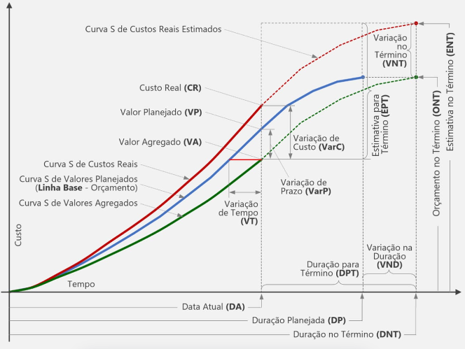
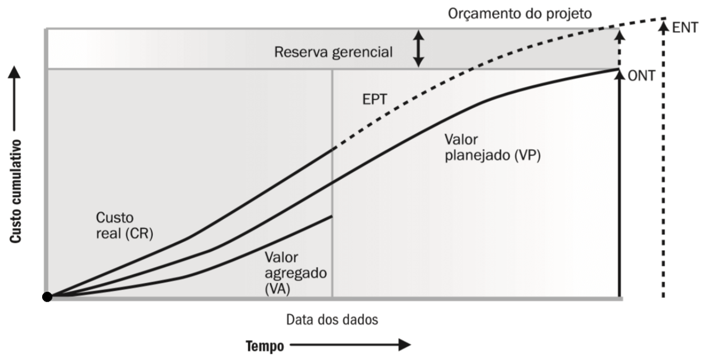

Técnica de Valor Agregado (EVM - Earned Value Management)#
A técnica de Valor Agregado (Earned Value Management - EVM) é uma metodologia amplamente utilizada para o acompanhamento e controle de projetos. O objetivo é integrar escopo, cronograma e custo, oferecendo uma visão clara da performance e da saúde do projeto.
A EVM fornece métricas que ajudam a responder questões fundamentais, como:
O projeto está dentro do cronograma?
O projeto está dentro do orçamento?
Qual é a previsão de desempenho futuro?
Neste notebook, vamos explorar a aplicação prática dessa técnica, calculando as principais métricas a partir de um conjunto de dados hipotético.
Estrutura do Notebook#
Definições e Fórmulas: Breve introdução às principais métricas e conceitos.
Cálculo Prático: Demonstração passo a passo utilizando Python.
Interpretação dos Resultados: Análise dos indicadores de desempenho do projeto.
Introdução à Técnica do Valor Agregado#
O Gerenciamento do Valor Agregado (Earned Value Management, EVM) ou Análise do Valor Agregado (Earned Value Analysis, EVA) é uma técnica de medição e controle de projetos baseado na medição física, financeira e de tempo que proporciona indicadores de avanço real, variações de desempenho e previsões para conclusão do projeto [KWJD03].
Foi desenvolvido pelo departamento de defesa dos Estados Unidos e é indicada pelo Project Managemetn Institute (PMI). Para Fleming and Koppelman [FK16], esta técnica é uma evolução desenvolvida a partir dos esforços iniciais com PERT (1962-1965, Program Evaluation and Review Technique) e CSPCS (1967-1996, Cost Schedule Planning and Control Specification) cujos principais avanços estão relacionados à integração de planejamento, controle e definição de escopos de projetos em uma única ferramenta.
O Project Management Institute (PMI) [Les06] classifica o EVM em duas categorias:
os parâmetros chave, que incluem:
o Valor Planejado (VP),que representa uma estimativa inicial para o trabalho planejado
o Valor Agregado (VA), que representa a quantidade de trabalho que foi realmente realizado até à data de medição, expressa em termos de orçamento inicial para esse trabalho
o Custo Real (CR), que representa o verdadeiro custo do trabalho realizado até o momento de medição
Indicadores de Desempenho que incluem:
A Variação de Prazo (VPr), que é calculada como VPr = VA – VP e representa o quanto o projeto está à frente (VPr > 0) ou atrás (VPr < 0) da programação
A Variação de Custo (VC) é calculada como VC = VA – CR e representa o quanto o projeto está abaixo (VC > 0) ou acima do orçamento (VC < 0)
O Índice de desempenho de prazos (IDP = VA / VP) representa o ritmo de produção, ou seja, a taxa de conversão de custo planejado em valor agregado. Ele fornece a mesma informação que VPr, mas agora em termos relativos
O Índice de Desempenho de Custos (IDC = VA / CR) representa o quão eficientemente os recursos estão sendo usados em termos de taxa de conversão de CR em VA.

A aplicação da Gerenciamento de Valor Agregado envolve:
Definir a Estrutura Analítica do Projeto (EAP) e o cronograma
Atribuir Valores Planejados (VP)
Atribuir Valores Reais (VR)
Atribuir Custos Reais (CR)
Medir e calcular os Indicadores de Desempenho: A Variação de Prazo (VPr) A Variação de Custo (VC) O Índice de desempenho de prazos (IDP = VA / VP) O Índice de Desempenho de Custos (IDC = VA / CR)
Monitorar e analisar os Resultados
Identificar desvios e aplicar ações corretivas
VP, VR e CR podem ser monitorados tanto de período a período (geralmente semana ou mês) como de maneira cumulativa
No PMBOK, a reserva de contingência é usada para riscos identificados e está no orçamento do projeto, enquanto a reserva gerencial cobre riscos não identificados. Ambas se correlacionam com as Técnicas de Análise de Valor (TVA), como o Valor Agregado (Earned Value), ao oferecer suporte financeiro para corrigir desvios detectados por indicadores como o IDC e o EPC. A TVA identifica problemas de desempenho, e as reservas garantem a sustentabilidade do valor, permitindo ajustes estratégicos e maior previsibilidade no gerenciamento de projetos.

Análise e interpretação da Técnica (Gerenciamento) de Valor Agregado (GVA)#
O Gerenciamento de Valor Agregado (GVA) é uma técnica que integra escopo, cronograma e custo para avaliar o desempenho e o progresso de um projeto. Ele permite medir a saúde financeira e o andamento de uma obra, identificando possíveis desvios para que ações corretivas sejam aplicadas.
1. Definir a Estrutura Analítica do Projeto (EAP) e o Cronograma#
A EAP é uma decomposição hierárquica do trabalho do projeto. Serve para estruturar as atividades em partes menores, facilitando o planejamento, controle e monitoramento.
O cronograma organiza o tempo necessário para cada atividade.
2. Atribuir Valores Planejados (VP)#
Valor Planejado (VP) representa o custo orçado para executar o trabalho planejado até o momento atual.
Exemplo de interpretação:
Período |
VP (R$) |
Descrição |
|---|---|---|
Semana 1 |
50.000 |
Custo planejado para a execução inicial |
Semana 2 |
100.000 |
Planejado para atingir 50% da execução total |
3. Atribuir Valores Reais (VR)#
Valor Real (VR) é o custo orçado para o trabalho que foi efetivamente concluído.
Exemplo de interpretação:
Período |
VR (R$) |
Descrição |
|---|---|---|
Semana 1 |
45.000 |
Execução real ficou abaixo do planejado |
Semana 2 |
110.000 |
Execução acima do planejado |
4. Atribuir Custos Reais (CR)#
Custo Real (CR) é o valor gasto efetivamente no período.
Exemplo de interpretação:
Período |
CR (R$) |
Descrição |
|---|---|---|
Semana 1 |
40.000 |
Gasto real inferior ao planejado |
Semana 2 |
120.000 |
Custo superior ao esperado |
5. Medir e Calcular Indicadores de Desempenho#
a) Variação de Prazo (VPr)#
Fórmula: VPr = VR - VP
Interpretação:
VPr > 0: Trabalho está adiantado.
VPr < 0: Trabalho está atrasado.
Período |
VR (R$) |
VP (R$) |
VPr (R$) |
Situação |
|---|---|---|---|---|
Semana 1 |
45.000 |
50.000 |
-5.000 |
Atrasado |
Semana 2 |
110.000 |
100.000 |
+10.000 |
Adiantado |
b) Variação de Custo (VC)#
Fórmula: VC = VR - CR
Interpretação:
VC > 0: O projeto está abaixo do custo esperado.
VC < 0: O projeto está acima do custo esperado.
Período |
VR (R$) |
CR (R$) |
VC (R$) |
Situação |
|---|---|---|---|---|
Semana 1 |
45.000 |
40.000 |
+5.000 |
Abaixo do custo |
Semana 2 |
110.000 |
120.000 |
-10.000 |
Acima do custo |
c) Índice de Desempenho de Prazos (IDP)#
Fórmula: IDP = VR / VP
Interpretação:
IDP > 1: O projeto está adiantado.
IDP < 1: O projeto está atrasado.
IDP = 1: O projeto está no prazo.
Período |
VR (R$) |
VP (R$) |
IDP |
Situação |
|---|---|---|---|---|
Semana 1 |
45.000 |
50.000 |
0,90 |
Atrasado |
Semana 2 |
110.000 |
100.000 |
1,10 |
Adiantado |
d) Índice de Desempenho de Custos (IDC)#
Fórmula: IDC = VR / CR
Interpretação:
IDC > 1: O projeto está dentro do orçamento.
IDC < 1: O projeto está acima do orçamento.
IDC = 1: O projeto está dentro do orçamento previsto.
Período |
VR (R$) |
CR (R$) |
IDC |
Situação |
|---|---|---|---|---|
Semana 1 |
45.000 |
40.000 |
1,12 |
Dentro do orçamento |
Semana 2 |
110.000 |
120.000 |
0,92 |
Acima do orçamento |
6. Monitorar e Analisar os Resultados#
Comparar periodicamente os indicadores VPr, VC, IDP e IDC para avaliar o progresso.
7. Identificar Desvios e Aplicar Ações Corretivas#
Ações corretivas são definidas com base nos desvios observados nos indicadores.
Exemplo:
Se o IDP está abaixo de 1 (atraso), pode ser necessário:
Reprogramar atividades.
Aumentar recursos alocados.
Se o IDC está abaixo de 1 (custo alto), pode ser necessário:
Reduzir desperdício.
Negociar novos contratos.
Monitoramento Periódico e Cumulativo#
Os valores VP, VR e CR podem ser monitorados:
Período a período (ex.: semanalmente) para identificar mudanças rápidas.
Cumulativamente, para avaliar o progresso total do projeto.
Período |
VP Acumulado (R$) |
VR Acumulado (R$) |
CR Acumulado (R$) |
|---|---|---|---|
Semana 1 |
50.000 |
45.000 |
40.000 |
Semana 2 |
150.000 |
155.000 |
160.000 |
Conclusão#
O Gerenciamento de Valor Agregado fornece uma visão integrada sobre o desempenho de prazo e custo, permitindo gerenciar a obra de forma mais eficiente e assertiva.
Principais desafios:
Falta de dados precisos
Imprevistos e mudanças no escopo do projeto
Falta de apoio e participação da equipe
Dificuldade de integração com outras técnicas e indicadores